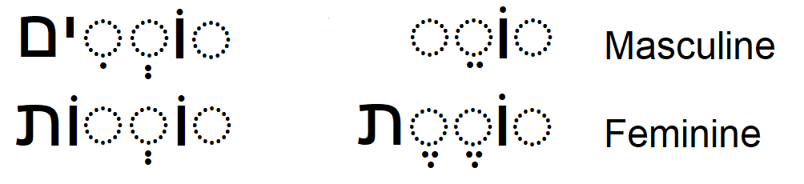
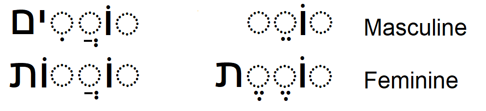
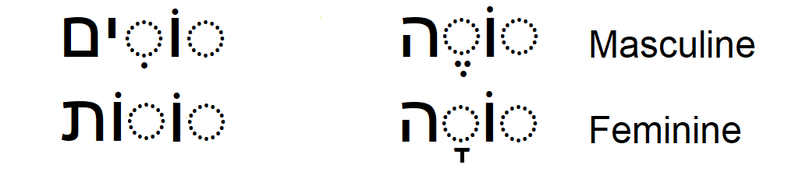

Main references:
"Ha-Yesod Fundatamentals of Hebrew"
by Luba Uveeler & Norman M. Bronznick
"Modern Hebrew Verbs Step By Step"
by Rut Avni
"501 Hebrew Verbs"
by Shmuel Bolozky, Ph.D.
www.pealim.com
PA'AL Binyan
בִּנְיָןפָּעַל
The verb form called the present tense (הֹוֶה) in modern Hebrew was originally used
only as a present participle consequently אני לומד, for example, has the following
possible translations:
I learn, I do learn, and I am learning in addition to I am a learner.
The proper translation of Hebrew depends more heavily on context than does English.
There is no Hebrew present tense equivalent for the verb "to be". Nor is there an
indefinite article, so in order to say something like David is a teacher in Hebrew
you would say:
.דוד מורה
literally, David teacher.
However, the personal pronoun is often added for emphasis in third person narratives.
For example,
.דוד הוה מורה
literally, David he teacher.
Most Hebrew verbs have a three letter root (שׁוֹרֶשׁ), to which are added prefixes, infixes
and suffixes when they are conjugated.
The present tense does not inflect in first, second or third person so therefore it has
only four forms:
masculine singular, feminine singular, masculine plural and feminine plural
The simplest form of verbs are of the binyan (בִּנְיָן) pa'al (פָּעַל)(do, make) also called
קָטַל or קַל (easy).They show simple actions that are always active and may be transitive
(takes a direct object) or intransitive (action is complete without taking a direct object).
The present tense conjugation of regular verbs of this binyan is illustrated below.
The three root letters, or radicals, are represented by:
Plural Singular

As an example, the three letter root for the Hebrew verb
meaning learns or studies is
למד
Plural
Singular
לוֹמְדִים
לוֹמֵד
Masculine
לוֹמְדוֹת
לוֹמֶדֶת
Feminine
The present tense of the verbs whose
middle radical is a guttural (א, ה, ח, ע).
Plural Singular

The three letter root for the Hebrew verb
meaning asks or borrows is
שׁאל
Plural
Singular
שׁוֹאֲלִים
שׁוֹאֵל
Masculine
שׁוֹאֲלוֹת
שׁוֹאֶלֶת
Feminine
The three letter root for the Hebrew verb
meaning laughs is
צחק
Plural
Singular
צוֹחֲקִים
צוֹחֵק
Masculine
צוֹחֲקוֹת
צוֹחֶקֶת
Feminine
The present tense of verbs whose third radical is an "א".
Plural Singular
Only feminine singular is irregular.
As an example, the three letter root for the Hebrew verb
meaning reads or calls is
קרא
Plural
Singular
קוֹראִים
קוֹרֵא
Masculine
קוֹראְוֹת
קוֹרֵאת
Feminine
The present tense of verbs whose
third radical is a "ח" or an "ע".
Plural Singular
The three letter root for the Hebrew verb
meaning takes is
לקח
Plural
Singular
לוֹקְחִים
לוֹקֵחַ
Masculine
לוֹקְחוֹת
לוֹקַחַת
Feminine
The three letter root for the Hebrew verb
meaning knows is
ידע
Plural
Singular
יוֹדעִים
יוֹדֵעַ
Masculine
יוֹדעוֹת
יוֹדַעַת
Feminine
The present tense of verbs whose third radical is a "ה".
Plural Singular

As an example, the three letter root for the Hebrew verb
meaning sees is
ראה
Plural
Singular
רוֹאִים
רוֹאֶה
Masculine
רוֹאוֹת
רוֹאָה
Feminine
The three letter root for the irregular Hebrew verb
meaning lives or be alive.
חיה
Plural
Singular
חַיִּים
חַי
Masculine
חַיּוֹת
חַיָּה
Feminine
The present tense of verbs whose middle radical is a "ו" or a "י".
These two verb forms are referred to as ע"ו and ע"י respectively.
They lose their middle radical as shown below.
The three letter root for the Hebrew verb
meaning gets up is
קום
Plural
Singular
קָמִים
קָם
Masculine
קָמוֹת
קָמָה
Feminine
The three letter root for the Hebrew verb
meaning sings is
שיר
 Only feminine singular is irregular.
As an example, the three letter root for the Hebrew verb
meaning reads or calls is
קרא
Only feminine singular is irregular.
As an example, the three letter root for the Hebrew verb
meaning reads or calls is
קרא
 The three letter root for the Hebrew verb
meaning takes is
לקח
The three letter root for the Hebrew verb
meaning takes is
לקח